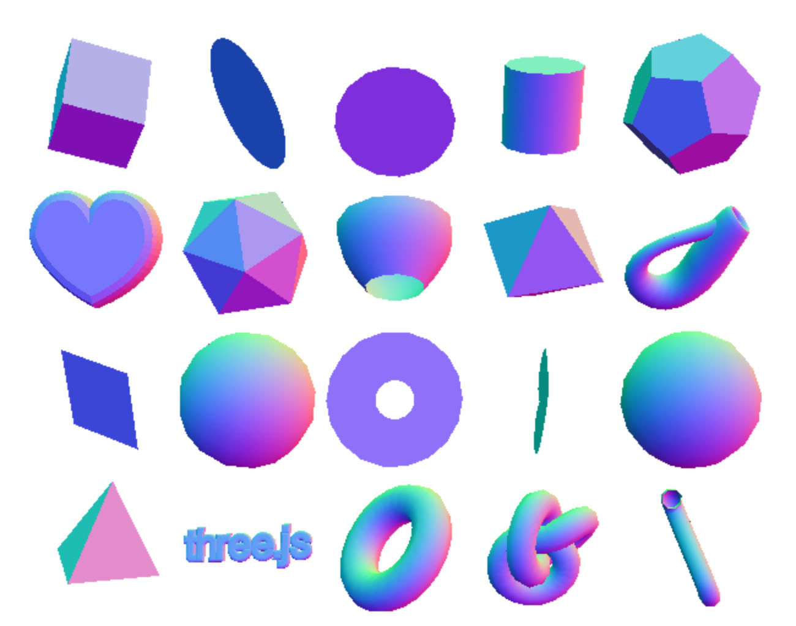
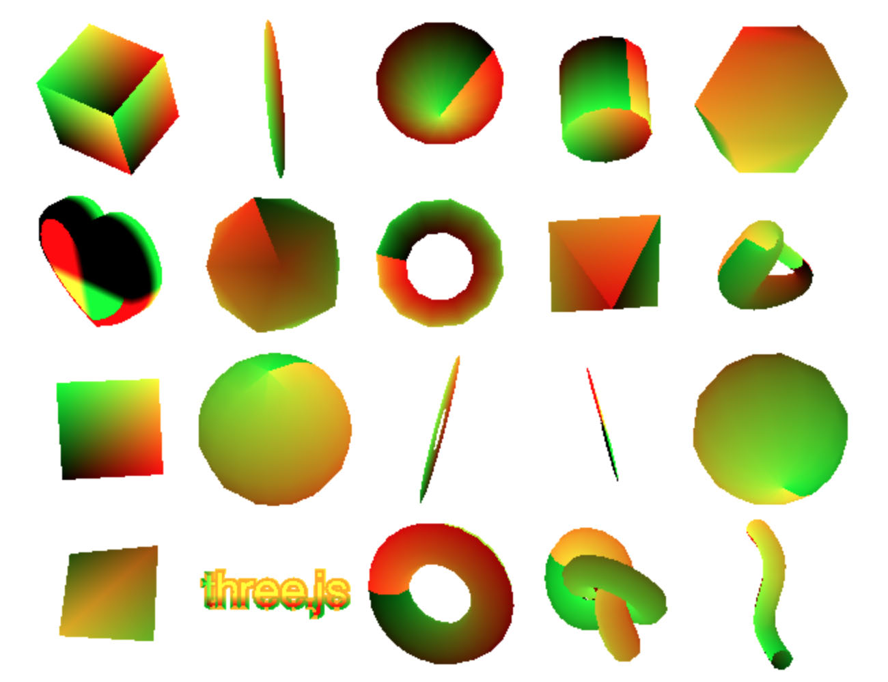
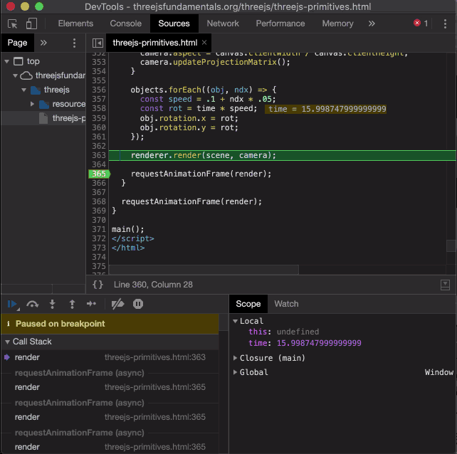

这个网站到目前为止不教授 GLSL，就像不教授 JavaScript 一样。 这些都是非常大的话题。如果你想学习 GLSL，请考虑查看 这些文章作为起点。
如果您已经了解 GLSL，那么这里有一些调试技巧。
当我制作新的 GLSL 着色器时，通常不会出现任何内容 我做的第一件事是更改片段着色器以返回实体 颜色。例如，在着色器的最底部，我可能会放置
void main() {
...
gl_FragColor = vec4(1, 0, 0, 1); // red
}
如果我看到我试图绘制的对象，那么我知道问题是 与我的片段着色器有关。它可能是任何东西，比如糟糕的纹理， 未初始化的制服，具有错误值的制服，但至少 我有一个看的方向。
为了测试其中一些，我可能会开始尝试绘制一些输入。 例如，如果我在片段着色器中使用法线，那么我可能会 add
gl_FragColor = vec4(vNormal * 0.5 + 0.5, 1);
法线从 -1 到 +1，因此乘以 0.5 再加上 0.5 我们得到 值从 0.0 到 1.0，这使得它们对颜色很有用。
用一些你知道有效的东西尝试一下，你就会开始有了想法 正常情况下的样子。如果你的法线看起来不正常 那么你就有了一些线索去哪里寻找。如果你正在操纵法线 在片段着色器中，您可以使用相同的技术来绘制 该操作的结果。

同样，如果我们使用纹理，则会有纹理坐标，我们 可以用类似
gl_FragColor = vec4(fract(vUv), 0, 1);
的东西来绘制它们 fract 是存在的，以防我们使用向外的纹理坐标
0 到 1 范围。如果 texture.repeat 设置为更大的值，则这种情况很常见
比 1.

您可以对片段着色器中的所有值执行类似的操作。弄清楚
他们的范围可能是什么，添加一些代码来设置 gl_FragColor
该范围缩放为 0.0 到 1.0
要检查纹理，请尝试 CanvasTexture 或 DataTexture 您
知道有效。
相反，如果将 gl_FragColor 设置为红色后我仍然什么也看不到
然后我有一个暗示我的问题可能是事情的方向
与顶点着色器有关。有些矩阵可能是错误的或者是我的
属性可能有错误的数据或设置不正确。
我首先看一下矩阵。我可能会在之后放置一个断点
我调用 renderer.render(scene, camera) 然后开始扩展
检查器中的东西。是相机的世界矩阵和投影
矩阵至少没有充满NaNs？扩大场景并寻找
在其 children 我会检查世界矩阵看起来是否合理（没有 NaNs）
每个矩阵的最后 4 个值对于我的场景来说看起来是合理的。如果我
期望我的场景为 50x50x50 单位，一些矩阵显示 552352623.123
显然那里出了问题。

就像我们对片段着色器所做的那样，我们也可以从
顶点着色器，将它们传递给片段着色器。声明一个变化的
在两者中传递您不确定是否正确的值。事实上如果我的
使用法线着色器使用我将更改片段着色器以显示它们
就像上面提到的，然后只需将 vNormal 设置为我想要的值
显示但缩放，使值从 0.0 到 1.0。然后我看
结果并看看它们是否符合我的期望。
另一件好事是使用更简单的着色器。你能画出你的数据吗
与MeshBasicMaterial？如果您可以尝试一下并确保它显示
按预期上升。
如果不是，最简单的顶点着色器是什么，可以让您可视化您的 几何？通常它很简单
gl_Position = projection * modelView * vec4(position.xyz, 1);
如果有效，开始一次添加一点更改。
您可以做的另一件事是使用 适用于 Chrome 的着色器编辑器扩展程序 或其他浏览器的类似操作。这是了解其他着色器的好方法 正在工作。这也很好，因为您可以进行上面建议的一些更改 在代码运行时实时运行。